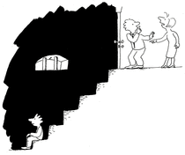

Le soir, Jojo demanda à manger quelque chose de bleu. « De bleu ? Mais ça n'existe pas ! » « Je veux du bleu, du bleu comme du bleu de ciel ! » Sa mère, Madame Jojo, essaya tout : les cuisses de schtroumpfs, la confiture de myosotis, de bleuets… ce n'était jamais vraiment BLEU. Il devint si maigre qu'il faisait pitié et eut même des ennuis pour avoir goûté du bleu de l'uniforme, de l'encre bleue « des mers du Sud » et du bleu de chasse d'eau.